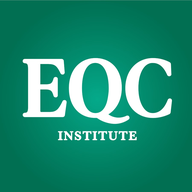
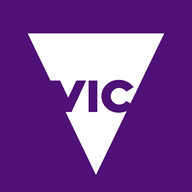
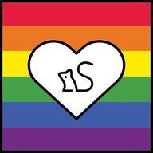
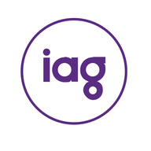

Intake class hubs
One hub per diploma intake: lesson write-ups and decks, assessment briefs, interactive quizzes, reference cheat sheets, downloads and curated resources. Live hubs for four intakes:
Learning & Development · Training & Assessment · Digital Learning Design
TAE40122-qualified trainer and assessor who builds the digital learning materials he teaches from. Fifteen years of training, coaching and facilitation run through a varied career in government, the justice system, aviation, telecommunications, health insurance and community broadcasting, formalised into a dedicated training role at an accredited RTO from late 2025.
Combines learning design, assessment and LMS administration with practical technical skills: interactive HTML learning hubs, Articulate, dashboards, AI workflows and accessible web design. Founder of The Daly Creative, a Perth studio delivering web, brand and AI automation work. Recognised across roles for calm leadership, inclusive culture and clear communication under pressure.
One hub per diploma intake: lesson write-ups and decks, assessment briefs, interactive quizzes, reference cheat sheets, downloads and curated resources. Live hubs for four intakes:
Built for a professional trainer: five-area star ratings (content, delivery, activities, materials, organisation), most valuable part, suggestions and a recommend score, rolled up into a dashboard.
Projector-led classroom engagement: Trivia Live, noticeboard games, Prompt Battle and a name picker. Learners join from their phones by QR code, with no logins or installs.
Turned the Mental Health Commission WA's 40-page family information booklet into a mobile-first, plain-English page with a 24/7 helpline and a one-tap quick exit.
Other projects




Diploma of IT units (EQC Record of Results, 2026)
Referees available on request.